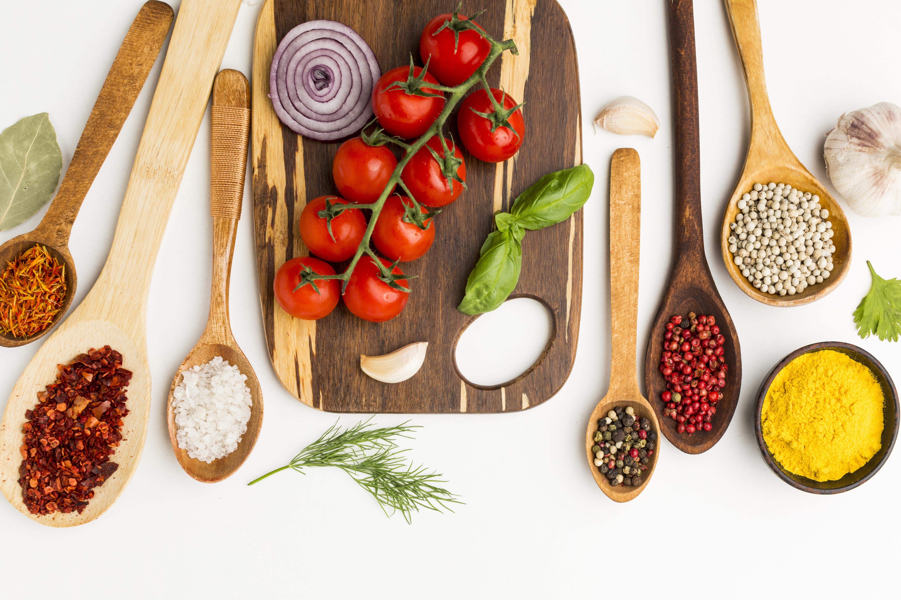

Receita Bolo
Ingredientes

- 4 colheres de sopa de farinha de trigo
- 4 colheres de sopa de açúcar
- 2 colheres de sopa de cacau em pó (opcional, se quiser um bolo de chocolate ou dependendo de sua escolha)
- 1 ovo
- 3 colheres de sopa de leite
- 2 colheres de sopa de óleo (ou manteiga derretida)
- 1/4 colher de chá de fermento em pó
- Uma pitada de sal
- Opcional: gotas de chocolate, nozes ou frutas secas a gosto
Preparo

- Preaqueça o Forno: Preaqueça o forno a 180°C (350°F). Unte uma forma com manteiga e polvilhe com farinha de trigo.
- Prepare os Ingredientes Secos: Em uma tigela grande, peneire a farinha de trigo, o açúcar, o cacau em pó, o fermento em pó, o bicarbonato de sódio e o sal. Misture bem.
- Misture os Ingredientes Úmidos: Em outra tigela, bata os ovos com um batedor ou garfo até que fiquem levemente espumosos. Adicione o óleo e a essência de baunilha, se estiver usando, e misture bem.
- Combine os Ingredientes: Faça um buraco no centro dos ingredientes secos e despeje a mistura de ovos e óleo. Misture bem até que a massa esteja homogênea.
- Adicione a Água Quente: Adicione a água quente à massa e misture até que fique completamente incorporada. A massa ficará um pouco líquida, mas é assim que deve ser.
- Asse o Bolo: Despeje a massa na forma preparada e leve ao forno. Asse por cerca de 30-35 minutos, ou até que um palito inserido no centro do bolo saia limpo.
- Esfrie e Sirva: Retire o bolo do forno e deixe esfriar na forma por 10 minutos. Depois, desenforme e deixe esfriar completamente sobre uma grade.
- Decore (Opcional): Se desejar, você pode cobrir o bolo com uma cobertura de chocolate, chantilly ou açúcar de confeiteiro.